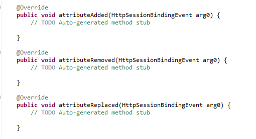
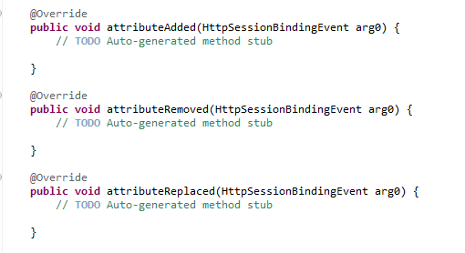
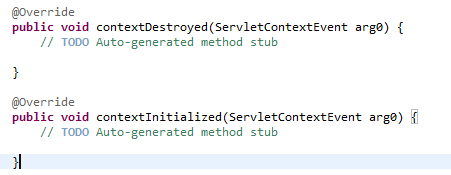
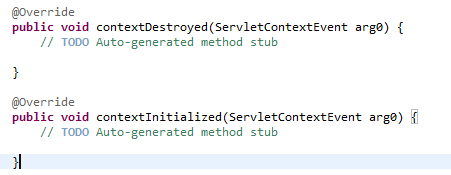
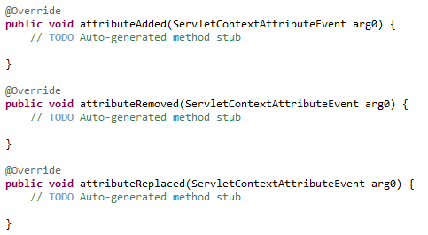
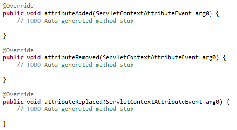
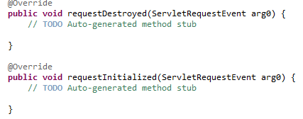
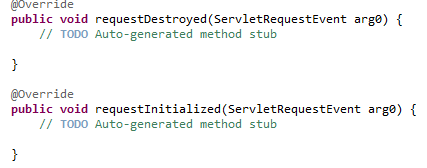

关于listener监听器
一、概念
监听器用于监听web应用中某些对象、信息的创建、销毁、增加，修改，删除等动作的发生，然后作出相应的响应处理。当范围对象的状态发生变化的时候，服务器自动调用监听器对象中的方法。常用于统计在线人数和在线用户，系统加载时进行信息初始化，统计网站的访问量等等。
二、创建步骤：
（一）创建一个实现监听器接口的类
（二）配置web.xml文件，注册监听器
监听器的启动顺序：按照web.xml的配置顺序来启动
加载顺序：监听器>过滤器>Servlet
三、分类
（一）按监听的对象划分：
ServletContext对象监听器----用于监听应用程序环境对象
HttpSession对象监听器-------用于监听用户会话对象(HttpSeesion)
ServletRequest对象监听器----用于监听请求消息对象(ServletRequest)
（二） 按监听的事件划分
1、对象自身的创建和销毁的监听器
①ServletContext的创建和销毁：contextInitialized方法和contextDestroyed方法
public void contextInitialized(ServletContextEvent sce)//ServletContext创建时调用
public void contextDestroyed(ServletContextEvent sce)//ServletContext销毁时调用
主要用途：作为定时器、加载全局属性对象、创建全局数据库连接、加载缓存信息等
②HttpSession的创建和销毁：sessionCreated和sessionDestroyed方法
public void sessionCreated(HttpSessionEvent se)//session创建时调用
public void sessionDestroyed(HttpSessionEvent se)//session销毁时调用
主要用途：统计在线人数、记录访问日志等
③ServletRequest的创建和销毁：requestInitialized和requestDestroyed方法
public void requestInitialized(ServletRequestEvent sre)//request创建时调用
public void requestDestroyed(ServletRequestEvent sre)//request销毁时调用
主要用途：读取request参数，记录访问历史
2、对象中属性的创建和消除的监听器
根据监听对象不同分别实现ServletContextAttributeListener、HttpSessionAttributeListener、ServletRequestAttributeListener接口。
实现方法：attributeAdded、attributeRemoved、attributeReplaced
3、session中的某个对象的状态变化的监听器
HttpSession中的对象状态：绑定→解除绑定；钝化→活化
实现接口及方法：HttpSessionBindingListener接口(valueBound和valueUnbound方法)、HttpSessionActivationListener接口(sessionWillPassivate和sessionDidActivate方法)
【注1】①要实现钝化和活化必须实现Serializable接口
②不需要在web.xml中注册
【注2】
绑定： 通过setAttribute保存到session对象当中
解除绑定： 通过removeAttribue去除
钝化： 将session对象持久化到存储设备上
活化： 将session对象从存储设备上进行恢复
session钝化机制：
①把服务器不常使用的session对象暂时序列化到系统文件或者是数据库中，当使用时反序列化到内存中，整个过程由服务器自动完成；
②session的钝化机制由SessionManager管理，创建一个普通的JavaBean绑定和接触需要实现HttpSessionBindingListener接口
三、示例
（一）用监听器统计网站在线人数
原理：每当有一个访问连接到服务器时，服务器就会创建一个session来管理会话。那么我们就可以通过统计session的数量来获得当前在线人数。
所以这里用到的是HttpSessionListener。
1：创建监听器类，实现HttpSessionListener接口。
2：重写监听器类中的方法
public class onLineCount implements HttpSessionListener {
//记录session的数量
public int count=0;
//监听session的创建
public void sessionCreated(HttpSessionEvent arg0) {
count++;
arg0.getSession().getServletContext().setAttribute("Count", count);
}
//监听session的撤销
public void sessionDestroyed(HttpSessionEvent arg0) {
count--;
arg0.getSession().getServletContext().setAttribute("Count", count);
}
}
3：在web.xml中配置监听器。注意：监听器>过滤器>serlvet，配置的时候要注意先后顺序
<listener>
<listener-class>com.ygj.control.onLineCount</listener-class>
</listener>
在Servlet3.0中，监听器的配置可以直接在代码中通过注释来完成，无需在web.xml中再配置。
@WebListener //在此注明以下类是监听器
public class onLineCount implements HttpSessionListener {
public int count=0;
public void sessionCreated(HttpSessionEvent arg0) {
count++;
arg0.getSession().getServletContext().setAttribute("Count", count);
}
@Override
public void sessionDestroyed(HttpSessionEvent arg0) {
count--;
arg0.getSession().getServletContext().setAttribute("Count", count);
}
4：在显示在线人数处通过session.getAttribute("Count")即可获取在线人数值。
四、常用的监听器
除了上面监听session建立与销毁的listener外，还有以下几个常用的监听器。
1：监听session属性的增加、移除以及属性值改变的HttpSessionAttributeListener
 
 2：监听web上下文的初始化（服务器已准备好接收请求）与销毁的ServletContextListener
 
 3：监听web上下文属性的增加、删除、属性值变化的ServletContextAttributeListener
 
 4：监听request的创建与销毁的ServletRequestListener
 
 5：监听request的属性的增加、删除、属性值变化的ServletRequestAttributeListener